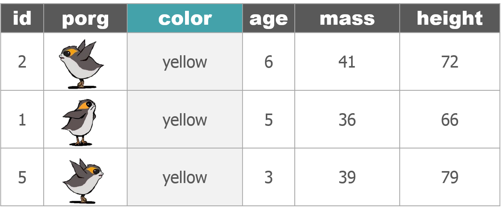
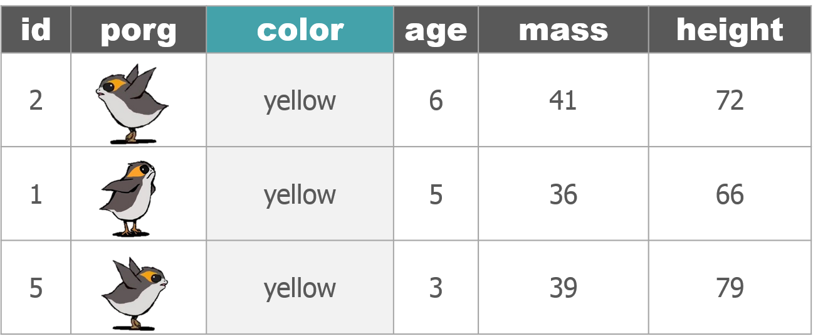

Who’s the tallest of them all?
# Install new packages
install.packages("ggrepel")
# Load packages
library(dplyr)
library(ggplot2)
library(ggrepel)
# Get starwars character data
star_df <- starwars
# What is this?
glimpse(star_df)
## Observations: 87
## Variables: 13
## $ name <chr> "Luke Skywalker", "C-3PO", "R2-D2", "Darth Vader", ...
## $ height <int> 172, 167, 96, 202, 150, 178, 165, 97, 183, 182, 188...
## $ mass <dbl> 77.0, 75.0, 32.0, 136.0, 49.0, 120.0, 75.0, 32.0, 8...
## $ hair_color <chr> "blond", NA, NA, "none", "brown", "brown, grey", "b...
## $ skin_color <chr> "fair", "gold", "white, blue", "white", "light", "l...
## $ eye_color <chr> "blue", "yellow", "red", "yellow", "brown", "blue",...
## $ birth_year <dbl> 19.0, 112.0, 33.0, 41.9, 19.0, 52.0, 47.0, NA, 24.0...
## $ gender <chr> "male", NA, NA, "male", "female", "male", "female",...
## $ homeworld <chr> "Tatooine", "Tatooine", "Naboo", "Tatooine", "Alder...
## $ species <chr> "Human", "Droid", "Droid", "Human", "Human", "Human...
## $ films <list> [<"Revenge of the Sith", "Return of the Jedi", "Th...
## $ vehicles <list> [<"Snowspeeder", "Imperial Speeder Bike">, <>, <>,...
## $ starships <list> [<"X-wing", "Imperial shuttle">, <>, <>, "TIE Adva...
Plot a histogram of the character heights.
# Height distribution
ggplot(star_df, aes(x = height)) + geom_histogram(fill = "hotpink")

Plot comparisons between height and mass with geom_point(...).
# Height vs. Mass scatterplot
ggplot(star_df, aes(y = mass, x = height)) +
geom_point(aes(color = species), size = 5)
Who’s who? Let’s add some labels to the points.
# Add labels
ggplot(star_df, aes(y = mass, x = height)) +
geom_point(aes(color = species), size = 5) +
geom_text_repel(aes(label = name))
# Use a log scale for Mass on the y-axis
ggplot(star_df, aes(y = mass, x = height)) +
geom_point(aes(color = species), size = 5) +
geom_text_repel(aes(label = name)) +
scale_y_log10()
Let’s drop the “Hutt” species before plotting.
# Without the Hutt
ggplot(filter(star_df, species != "Hutt"), aes(y = mass, x = height)) +
geom_point(aes(color = species), size = 5) +
geom_text_repel(aes(label = name, color = species))
We can add facet_wrap to make a chart for each species.
# Split out by species
ggplot(star_df, aes(x = mass, y = height)) +
geom_point(aes(color = species), size = 3) +
facet_wrap("species") +
guides(color = FALSE)


 
